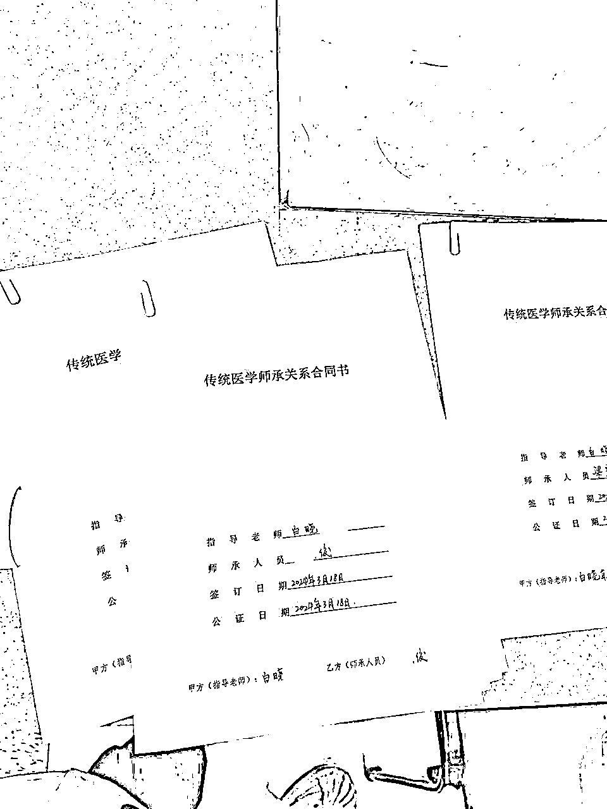
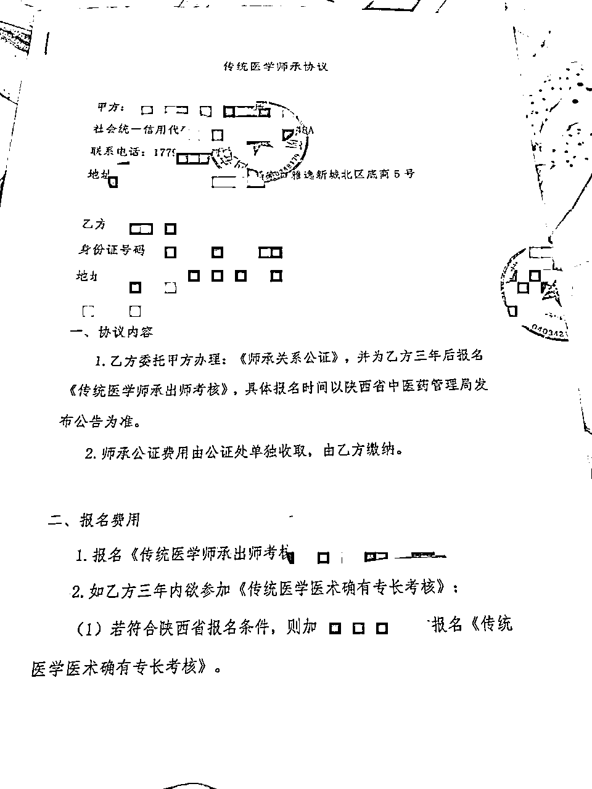
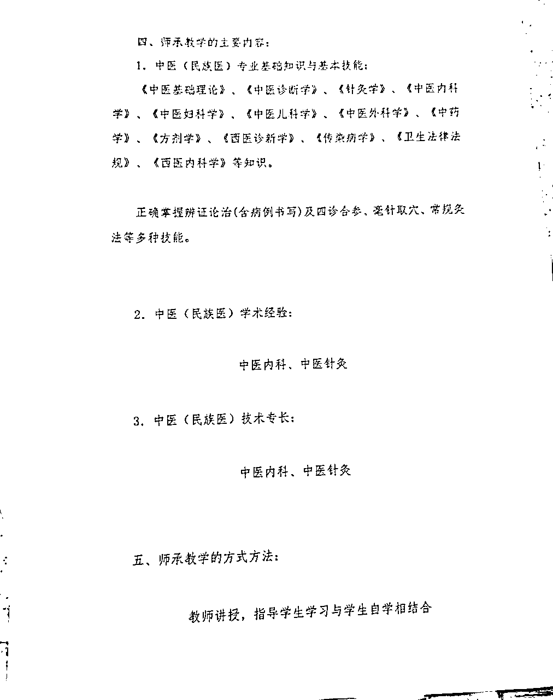
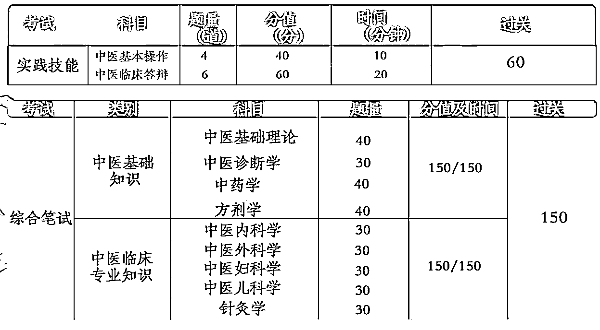
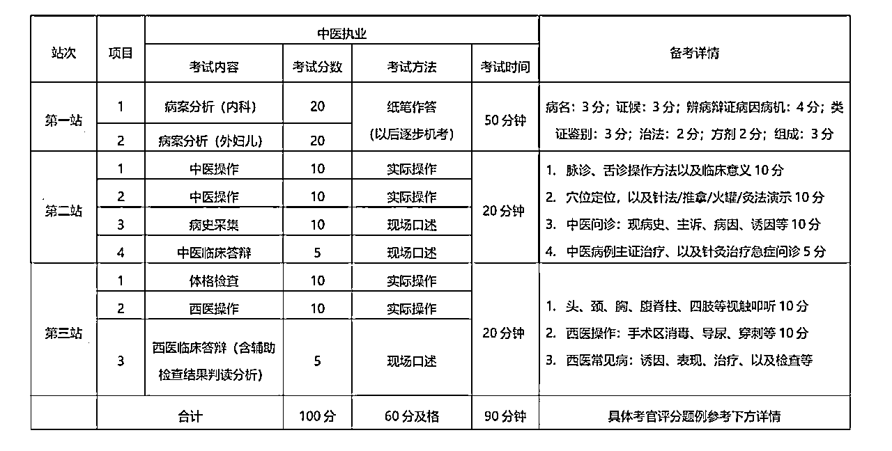
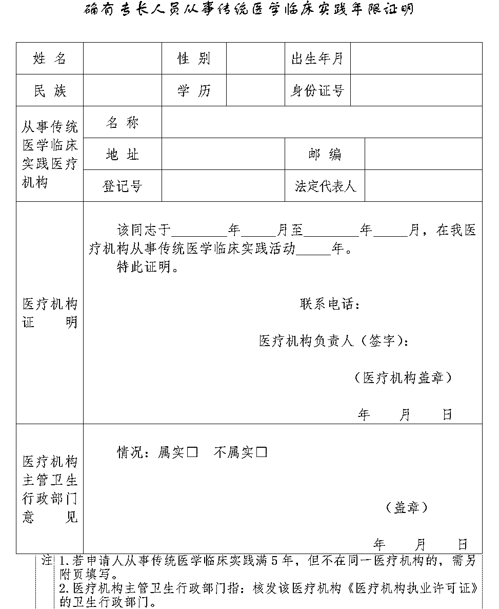
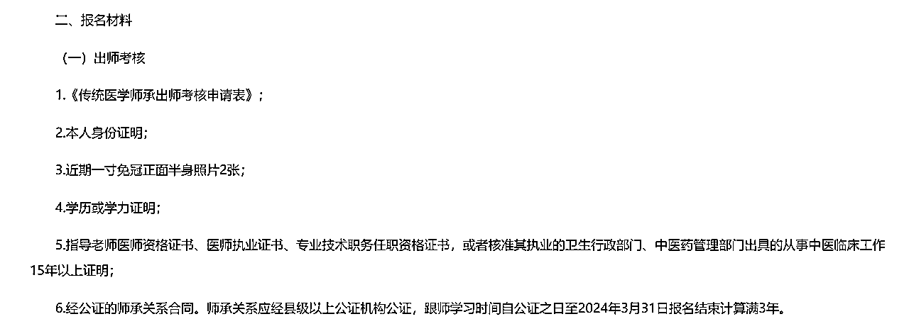
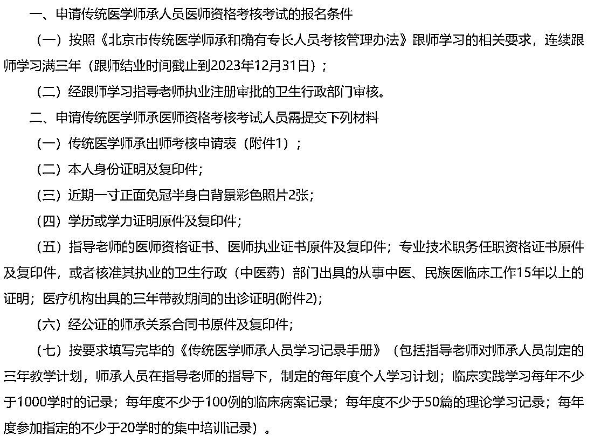

来源：https://e490v1rj80.feishu.cn/docx/TGzGdvSBHoAmTuxLT8qcTZxmnnc
各位圈友你好，我是安俊，先来做个自我介绍
03，目前大二广东上大学 ，一个喜欢搞商业的小男孩，某中医大健康养生小品牌的主理人，师承中医，目前自家一个品牌门店月收入稳定2~3W
在做业务：
①中医大健康养生品牌的抖音同城玩法，公域导私域，社群经营，私域复购
②私域IP运营，日更公众号，社群日更
③中医产品供应链
前段时间在老妈的催促下去完成了中医师承，签了师承合同，我从了解师承政策，到最后合同公证成功，我深深地感受到了这个赛道的中介利润之大，想真正考证的人踩坑的地方太多，所以来拆解一下这个赛道，提供给大家想转行做中医，考中医证的人一些思路，和有医疗资源的人赚钱的思路



疫情中，中医中药发挥了大力作用，越来越多非科班的社会人士，想去学习中医知识，想考个中医相证；
也有很多从事中医养生行业的想获得一个中医资格证；
或者因为想照顾家人的身体健康
也有许多考不上大学的中专高中一毕业就进行师承，这也是一条出路，比如最近很多在私域做中医自媒体IP的，可谓是站在风口上。
为了提倡我国的中医发展，国家从2007年早就提供了相关政策，给社会人士提供了学习中医考证的渠道：《传统医学师承和确有专长人员医师资格考核考试办法》
我就不按照政策一长串说了，我简述一下。非科班去取得中医执业证，一共有三条路径：
要求：
路径：3年跟师学习后考出师证→1年考中医助理执业医师证→5年后中医执业医师资格
要求：
路径：1年考确有专长考试→1年考中医助理执业医师证→5年后考中医执业医师资格
要求：
路径：1年考中医专长医师资格证书→5年后考执业医师；
这里不重点讨论，通过率太低，一个省一年就只能通过几个人
看起来还挺难的，但是作为中医里面最高含金量的证，有点麻烦太正常了，这个含金量不是随随便便市面上一个花钱买就能拿到的“中医康复理疗师证”的含金量能比的
1.师承
2.老专长
3.新专长
这里的信息差非常大，大家好好观看
师承合同：师承全称是师徒传承，你要报名出师考试的时候，你要向中医药管理局证明你已经师承满3年，就是拿3年前你签订的师承合同给中医药管理局证明你3年前完成了师承。你要去签一份师承合同（从中医药管理局官网下载），并且去公证处进行公证，公证处会检查你合同的真实性。
出师证和确有专长证都不具有处方权，出师证和确有专长证相当于毕业证，证明你学过这个东西，但是学过不代表你有处方权了，它只是作为考“中医助理执业医师证”的门槛。
中医助理执业医师证在县级诊所有独立处方权，在城市有一半的处方权：也就是 你写一个处方，需要另一个中医在处方单上签字，才能给别人开处方单。
执业医师资格证有全国独立处方权。
新专长的中医执业医师资格才有独立处方权。新专长的中医专长医师资格证书有某一个病症的处方权，但是这个及其难考，不考虑
拿到中医助理执业医师证后，有很多种方式可以缩短考执业医师的时间
师承和老专长考试内容如下，出师考和老专长考试的内容一样，难度差不多

助理医师考试内容：

有人肯定会问：我就想跟师学技术？为什么不能选师承？
我坚持的观点一直是：先学理论拿到助理医师证再去学技术
如果你没有自己的医疗资源，诊所资源，不能去到亲朋好友、认识的人诊所里面学习的，你去通过机构找的跟师跟诊资源，你还要费劲心思和师傅搞好关系才会教你东西，不过师傅都已经开始和中介合作进行商业交易关系了，真想学真东西很难，人情世故太多，会搞的你自己很烦的
师承别说老师愿不愿意教你，就算愿意教你，学到东西了又能咋，出师证又不能坐诊。就算老师让你上手，病人不会让你上手。病人问你：“你是大夫不？”你咋回答。有些病人连药都不让你给他抓，针灸也不让你下针，就因为你没证！
而且医学这技术，真不是你靠合同绑定的师徒关系的师承3年跟师能学到多少东西，很难，中医这东西够你学一辈子，不如好好学理论，确保一次通过
考完助理医师，然后参加转岗培训，或者考研专硕，到时候自然有老师带。能不能学好暂时不重要，先把证拿到手，再去进修，再去规培，这一系列做完后，再去跟师才有意义。你四十岁也能跟师，但是没有人四十岁才进修，规培的。理论都没学好，跟师有啥意义。
既然是跟师，跟师傅学习，你就应该排除掉所有的商业因素，金钱因素，去真心地向某个师傅学习，某个诊所实习，真正有技术的中医一般不屑于和中介合作，不屑于挣小白学中医的钱。但如果你有亲戚就开诊所的，那就啥都好说了，直接去签个师承合同，挂名不跟师，签这个合同让我能报名考试就行，我回家自己找诊所学习。（我就是这样的，我去陕西西安签了中医师承，回家自己跟我妈学，或者寒暑假去我妈朋友的诊所进行实习）
再回过头看，大家能理解为什么“师承理想很丰满，现实很骨感”
我说出这些东西，我估计生财里很多科班出身的中医前辈，一定在心里偷偷骂我了:“好好的一个师承政策给你们玩成这样？国家出师承不是给你这样搞的吖！是给想好好学中医的人去报名的！”
我想说的是，想好好跟师学东西，那完全没必要考虑这个师承政策，你就真心真意地去找老中医学习就好。出台这个政策，就有信息差，有人有需要，就会进行商业化，就会扯到金钱，扯到金钱，多多少少就不可能回归到政策的初心。
社会就这样，你改变不了社会，只能改变自己。
不过好的中医是真的不好找，好的中医基本都隐藏于世间，因为好的中医那个年代读不上书，基本没证，但是国家政策管的严，好中医基本不露面，更别说跟师学习了，也希望我们国家可以好好出台相关政策继续扶持中医
首先学习难度上来讲，师承和老专长内容差不多难度差不多。中介的考虑就是你既然0基础，你就选个时间长的让你慢慢学，还有一个原因师承的报名价格比老专长高，中介挣的更多。
如果你已经满了23岁，别听坑爹的中介给你推师承，浪费三年去熬师承的时间，真的是很愚蠢，明明能几个月就学习完的理论知识，非要拖到两三年，而且每年政策不稳定，能早点拿证才是硬道理，技术往后一辈子大把时间学，考证是要看政策的，你不能保证几年后，中医人数太多了，国家收紧中医考证的政策了
你难道不能自信点吗？如果你考得上大学，你通过老专长简直有手就行，如果你没考上大学，那能不能好好备考一年，改进自己的学习方法，掌握好正确的备考方法，相信自己一年就能通过呢？
3.老专长要求5年的实习经验呐，我没有怎么办？

这张图是，陕西省中医药管理局老专长报名要提供的文件材料，其实只要你能找到机构愿意给你，盖实习证明就可以，如果你自己没有亲朋好友的诊所资源，那你只能找中介帮你找（市面上的机构就是赚的这个钱，信息差的钱，医疗资源的钱）
有人吐槽，这不造假吗？
谁查得到你是真是假？你不这样干别人都准备把证考完了。100个考老专长的，有几个是真的做到在医疗机构里待满学习5年的？用脑子想想都不太可能
这世界上，哪有东西完全是真的，能合法地达到自己想要的目标和结果，本来就挺不容易的了
签完师承合同，公证完之后，大部分省份要去中医药管理局进行合同备案，因为公证机关和中医药管理局的信息不互通，你需要把你的合同信息，在两个地方都存放一次，相当于也是中医药管理局再帮你检查一次合同是否符合要求，符合要求才给你备案，也是保障了3年后你一定能凭借这份合同去进行出师考试。
如果你赞同我上面的观点：先学理论拿到助理医师证再去学技术
那我建议你可以去比较偏僻的省份进行报名考试，因为这些地方人少，竞争小，通过率高
比如我去西安报名的考试，基本是全国最高的通过率之一，我如果在广东本地考，真的很难过，广东的通过率25％左右，西安的最新一年数据通过率：
老专长通过率：42％~43％http://xawjw.xa.gov.cn/gzdt/tzgg/6444d59bf8fd1c1a70261b57.html（西安市卫健委官网）
师承通过率：60％~70％http://atcm.shaanxi.gov.cn/sy/tzgg/202304/t20230428_2284541.html（陕西省中医药管理局）
最好确保一年通过考试，不然又要等一年，费钱费时间
为什么明明你说师承和老专长难度差不多，但是通过率差那么多？
因为考师承的肯定学了，考老专长的不一定学。
师承有3年时间去学，考老专长的基本都是今年报名今年学今年考试，结果自己还懒，不好好复习，当然考不过。
助理医师和执业的通过率没有省份而言，因为这俩的考试全国统一，师承和老专长的考试内容由省份自己决定，所以各个省份的出师考和老专长通过率不一样，才有了所谓的信息差，哪个省份通过率高一点。
助理医师和执业医师的考试，只有全国通过率而言，助理医师大概在35％，执业医师通过率在50％。
有些机构承诺给网课，每周直播学习，有班主任监督，每个月线下培训，这些承诺看起来很好，但是单凭这些交付中介收费虚高，一个师承最便宜给你收3w，老专长收1.5w，不值得。
且不说网课大概率是医考机构的盗版网课（中介机构是提供报名服务，帮你找老师推荐，帮你盖5年实习；医考机构是专门开课教学生过考试的，很多中介机构就把盗版网课搬过来，费用虚高，这就是信息差的钱，花冤枉钱了）
线下培训，如果不是有执业资质的中医老师，一般来说是没资格开线下培训医学技能的，随时被举报的风险然后跑路
所以我建议，理论知识，该自学就自学吧，自学能力，学习方法还是很重要的
别听中介瞎说，报名考试需要什么资料，自己上中医药管理局官网查看，自己着手准备，自己准备不了才去找中介帮忙找，中介挣的就是医疗资源的钱罢了，你要是软磨硬泡能找来医生资源，愿意帮你盖章的，大可不必花钱
这个这个行道水很深，信息差很多，我们一定要以中医药管理局or以官网说的为主，其他人其他公众号说的一概不信。
陕西中医药管理局要求师承的报名资料：http://atcm.shaanxi.gov.cn/sy/tzgg/202403/t20240305_2321616.html

北京中医药管理局要求师承的报名资料：https://zyj.beijing.gov.cn/sy/tzgg/202402/t20240218_3563601.html

看到区别了吗？
北京的师承需要一大串的跟师笔记，真的写都写麻了。所以市面上很多机构，收费虚高，教学不行，说好的培训说没就没，还要你自己写跟师笔记，图啥呢？累都累死了
但是陕西的就不需要写跟师笔记（不是我说的，官网自己说的）肯定无脑选西安呐
建议找中医诊所的医生去推资源，因为中医诊所本身的主业是提供医疗服务挣钱，中医诊所的医生一般是科班出身，他的中医同学很多都能帮你推荐，帮别人推资源代报名只是副业，这种大概率不会跑路，他不会因为为了挣你那区区1w多，丢掉自己一年能挣几十w的诊所
但是如果是专门提供代报名服务的公司机构，自己租场地要成本，要请员工要成本，收入来源就是收报名费，一旦政策变动，公司收入没了，说跑路就跑路，到时候报名都报不上了，该有的培训全没了，本来要帮你推荐的中医，因为中介没了，他也不想管了，没有中医的资质，你也报名不上，钱全丢大海了，大部分人就是这么被坑的（抖音小红书投放广告的基本都容易因为这个踩雷）
一定要花2 3w找中介吗？说实话，我个人觉得市面上价格虚高，说白了就是中介有资源能找到医师推荐，能帮你盖诊所证明，再去把医考机构的网课抄过来给你卖2 3万，实话说有点离谱。如果你自己亲朋好友有医生的 ，开诊所的，可以问问医生的同事同学们能不能帮你做推荐医师，能的话按照官网准备报名材料就好
如果你可以多去当地诊所跑一跑，问一问，一个医生塞个1000好处费，请吃一顿饭，这不就搞定了，但是前提你能找到，最好自己有医疗诊所资源更好，盖证明也是自己有诊所资源的话，塞个几百块就给你盖就行了，但是最好是自己的医疗资源，不然确实还是很难沟通和交涉
能省钱，但是有个缺点，如果你是广东省的，你有能力找到广东的医生帮你做推荐，但是广东的通过率真的很低，考试难，这个是缺点，很可能考不过就等下一年了，比如广东出师考，今年只有25％的通过率。但是西安通过率老专长42％，师承65％，还是有点差距。如果你想提高考试通过率想去陕西 山西这些地方考，那你只能找当地诊所资源帮你推资源了，你总不能人在广东，自己能找到陕西的医生资源吧hhh。
越往南，考试越难，在西安考高分的去广东深圳考只能考及格，南方人重视中医，考的人多竞争大，试卷题目难
虽然这么说，但这个终归是一个应试考试，考证的，只要有恒心者，再难也考得过，毕竟，出师考试只是一个凭借为了去考助理医师罢了
重视起来。我观察过数据：西安的老专场通过率，21年46％，23年直接跌倒42％。
政策一年一换，难度一年一变，可能明年你就很难考了，国家也在扶持中医考证的人数，趁这几年赶紧把证拿到手，不然过几年中医人数太多了，可能就会收紧政策
也可能发现信息差之后，大家一窝蜂跑去偏远地方考，到时候全国都难考，卷起来了
正常人，如果不奔着开诊所的话，考到助理医师就够了。
走老专长最快2年拿助理医师，去做个什么中医养生IP，私域IP赚赚钱，也挺好
而且考到助理医师，中医知识可以说是已经相当丰富了，也可以照顾一下家人身体健康。助理医师在乡村地区是有独立处方权的，所以中医知识不会差
如果实在要那执照，可以修个非全日制的中医学历本科，可以缩短一两年考执业
不要奔着证去，要奔着学真东西去，可以考到助理后，理论知识已经很丰富了，可以去医院规培，可以找诊所跟诊学习，参加培训班，多看书学习技术，不是说有个执业证你的技术一定牛逼
如果奔着开诊所去，你考到助理医师后，可以找执业医师合作，拿他的证挂靠。但是赚钱的方式不止这一种，都进了生财了，好多赚钱的方式嘞，不要局限于诊所
况且这是医学呐，不是谁都给别人看病的，国家出台这么严格的政策，也会为了严格筛选有能力的人去当中医，也是为了大家好，不然谁都能拿这个证，这部乱套了
如果未来想继从事中医养生大健康赛道，不妨自己去拥有一个证，比如后边要做中医养生的自媒体IP，私域IP，分享养生知识，带货养生类产品，都可以考虑一下去考这个国家卫健委的最高含金量的证，对家人身体健康也好，给自己人生事业托底也好。
如果自己家有刚上大学生的，不妨也可以考虑给孩子报个师承留一条后路。
国家政策摆在这，社会趋势摆在这，这个动作不会错
感谢生财里面通过生财聚会认识的前辈，一对一给我指点了很多方向，给我提点的 中医大健康养生结合抖音本地生活方向来流量扶持自家门店，也提醒我去找厂家批量生产自己产品，也有很多大厂前辈给了我很多实习就业规划的资源。感谢生财有术，帮助了像我一样迷茫的大学生看到了更多的方向和选择，大家有什么相关问题，欢迎提问，知无不言，言无不尽。
如果此文章大家感兴趣的多，我可以写一篇给那些有医疗资源的如何前端获客引流，后端转化的SOP，谢谢大家！谢谢生财有术！
老专长人数全国报名人数大涨，报名难度增加，给出以下建议
1.想快速拿证的，建议在本省本市报名老专长，不要去外省外市
2.不着急拿证的，自己本地找诊所资源，好好师承跟诊学习技术